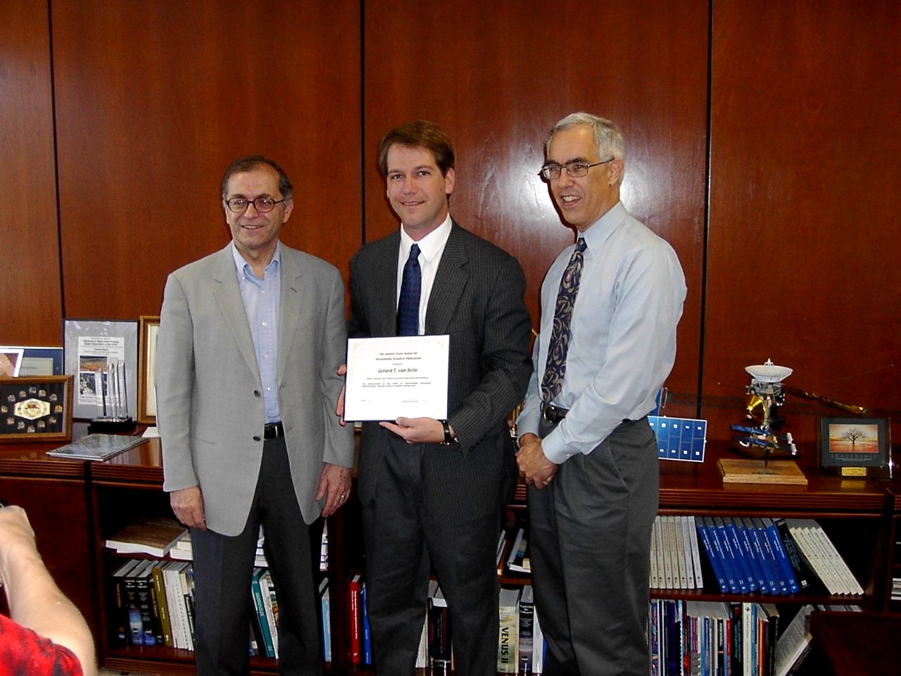

This
picture was snapped at the presentation of the 2001 Ed Stone Award for
Outstanding Research Publication, which was awarded for the
Astrophysical Journal article documenting our
observations of Altair. On my left is Dr. Charles Elachi, Director
of JPL, and on my right is Dr. Tom Prince, JPL's Chief Scientist.
My previous about page is also available.
Last updated: 12 Mar 2002
This page is maintained by Gerard
van Belle.